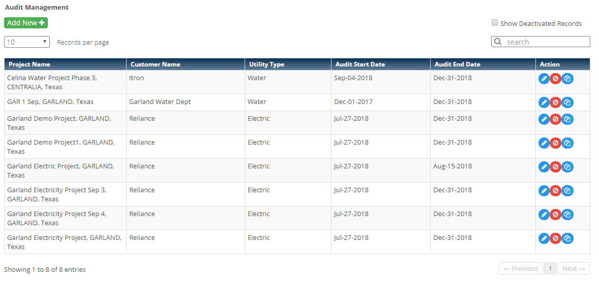
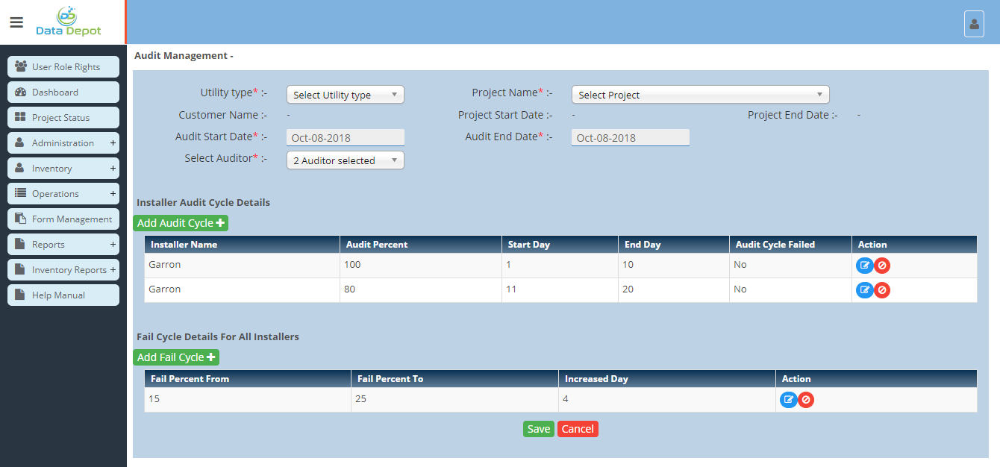
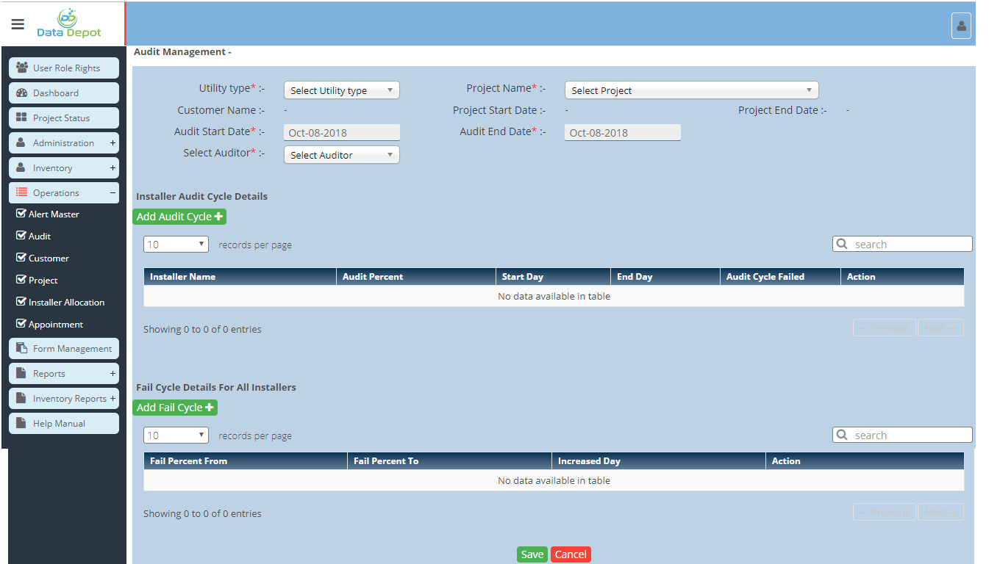

Audit Management
- Audit for particular project can be done from this form
Screen: Landing Page

Steps
- Click on the Menu to open Audit Management Landing Page.
- It displays list of previously added Audits.
- Click on
 button to add new audit.
button to add new audit.
- Following screen will open
- Select Utility Type
- Select Project Name
- Customer Name, Project Start Date and End Date will be displayed
- Select Audit Start Date
- Select Audit End date
- Select Single or Multiple Auditor
- Click on
 button to save the details
button to save the details
- Click on
 button to close the form.
button to close the form.
- Click on button to reset all fields.
Note: Audit project cannot be created, If audit settings is not created for customer and audit form is not created.
- Click on
 button to edit corresponding audit detail.
button to edit corresponding audit detail.
- Following Screen will open

- After Click on Edit button user can change details.
- Installer wise Audit Percentage table will be displayed in Grid view
- If Audit Cycle Failed, then “Yes” displayed in grid column and Increase days will be applied for particular installer.
- If Administrator wants to change the audit start day & end day or percentage for the installer then he can do by editing the records shown in Installer Audit Cycle Details.
- Click on button to save the Changes.
- Click on button to close the form.
- Click on icon to clone the audit project
- Following screen will open where user can select the new utility type and project name and save the audit settings

Created with the Personal Edition of HelpNDoc: Free help authoring tool